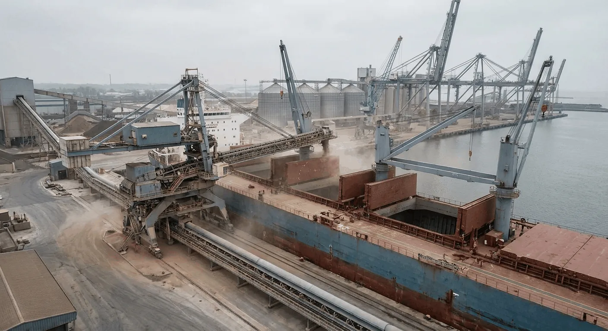
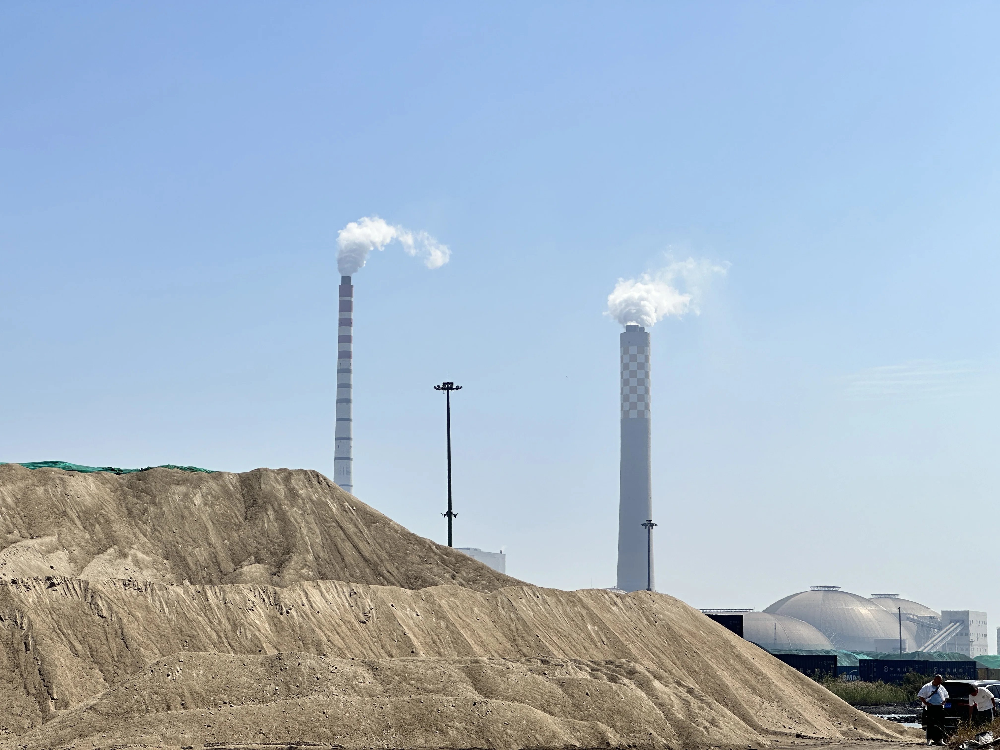

Dry Bulk Tightens, Low-Carbon Materials Rise: What Matters This Week
Freight discipline, operator selectivity and low-carbon cement material demand are shaping this week’s most relevant signals for bulk building-material exporters.
运价收紧、低碳材料升温：本周建材出口最值得关注的信号
本周对大宗建材出口最重要的三个信号，来自运价纪律、航运主体分化，以及低碳水泥材料需求的持续升温。

This week’s market tone is being shaped by two clear forces: freight conditions remain sensitive across dry bulk lanes, while low-carbon cement materials continue to gain attention in industry discussions. For exporters of GGBFS, GBFS, clinker and related materials, these signals are practical rather than abstract — they affect quoting rhythm, shipment planning and customer conversation directly.
1. Freight discipline is back at the center of execution
Recent market coverage suggests that tighter vessel supply and longer-haul demand are supporting dry bulk sentiment. Even when buyers remain price-sensitive, logistics discipline can reshape the final commercial outcome. For suppliers, that means freight timing, berth coordination and loading-window control remain as important as the product quote itself.
2. Market performance is becoming more selective
Shipping performance is no longer moving in one direction for all operators. Some players continue to perform steadily, while others struggle in a more selective environment. For cargo buyers and exporters, this reinforces a simple point: stable documentation, predictable loading execution and communication clarity can become real competitive advantages when the market is less forgiving.
3. Low-carbon cement materials remain a long-term theme
Green cement discussions continue to highlight clinker-efficient systems and supplementary cementitious materials. That does not mean every buyer will move at the same speed, but it does suggest that the broader direction remains intact. Materials that improve cement performance while aligning with lower-carbon targets are likely to stay relevant in both technical and commercial conversations.

For this week, the takeaway is simple: freight execution, logistics stability and material positioning are increasingly connected. The companies that present these together — not as separate issues, but as one integrated supply story — are more likely to stand out.
本周的市场氛围主要由两个清晰力量驱动：一方面，干散货航线的运价条件依旧敏感；另一方面，低碳水泥材料在行业讨论中的关注度持续提升。对于 GGBFS、GBFS、熟料及相关材料的出口商来说，这些信号并不抽象，而是会直接影响报价节奏、发运安排与客户沟通。
1. 运价纪律重新回到执行层面的中心位置
近期市场信息显示，船舶供给偏紧以及更长航程需求，正在支撑干散货市场情绪。即使买家仍然对价格敏感，物流纪律本身也会重新塑造最终的成交结果。对供应商来说，这意味着运价窗口、泊位协调与装港时间控制的重要性，并不亚于产品报价本身。
2. 市场表现正在出现更明显的分化
当前航运市场的表现，已经不再是所有参与者同向波动。一部分主体仍然维持稳定表现，另一部分则在更具选择性的环境中承压。对于货主和出口商来说，这再次说明一个简单但重要的事实：当市场容错率下降时，稳定的单证衔接、可预测的装港执行与清晰的沟通能力，本身就会成为真正的竞争优势。
3. 低碳水泥材料仍然是中长期主线
绿色水泥相关讨论仍在持续强调高熟料替代效率体系与补充胶凝材料的重要性。这并不意味着所有买家都会以同样速度推进，但它确实说明，大方向并没有改变。那些既能改善水泥性能、又能契合更低碳目标的材料，仍然会在技术与商务层面保持相关性。
对本周而言，结论很简单：运价执行、物流稳定性与材料定位正在变得越来越紧密相关。那些能够把这三者作为一个完整供应故事来呈现，而不是分散问题分别处理的公司，更有可能脱颖而出。